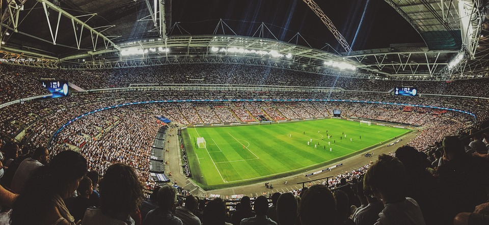
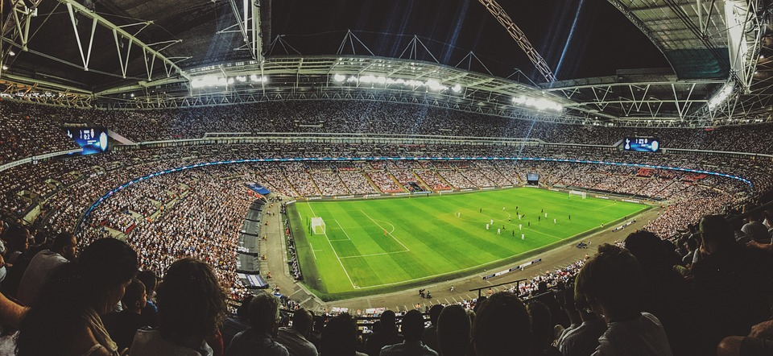

Nogomet
Nogomet se igra između dvije momčadi od jedanaest igrača svaka, s ciljem postizanja više golova od protivničke momčadi. Igrači koriste stopala, glavu i ostale dijelove tijela osim ruku da bi kontrolirali loptu i postigli gol.

Nogomet se igra između dvije momčadi od jedanaest igrača svaka, s ciljem postizanja više golova od protivničke momčadi. Igrači koriste stopala, glavu i ostale dijelove tijela osim ruku da bi kontrolirali loptu i postigli gol.

Neki od najvećih trenutaka u povijesti igre.